Нужна своя подписка ZALA. Приложение не связано с оператором.
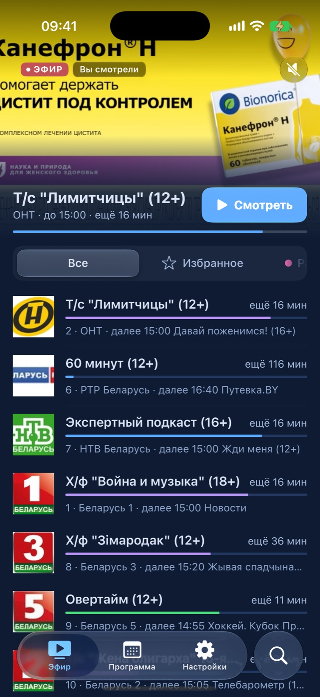
ЭФИР1080pПродолжаем с 34:10
Экраны
Как это выглядит
Тёмные экраны, янтарный акцент и стеклянные панели поверх видео.
«Эфир»: превью и «Продолжить просмотр»
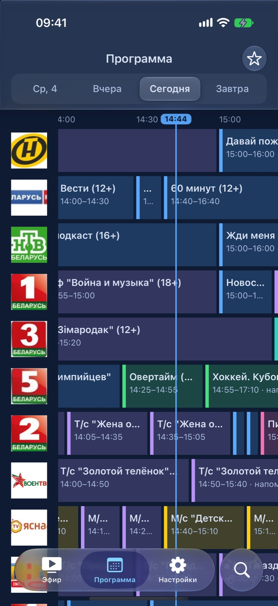
Программа по каналам и дням
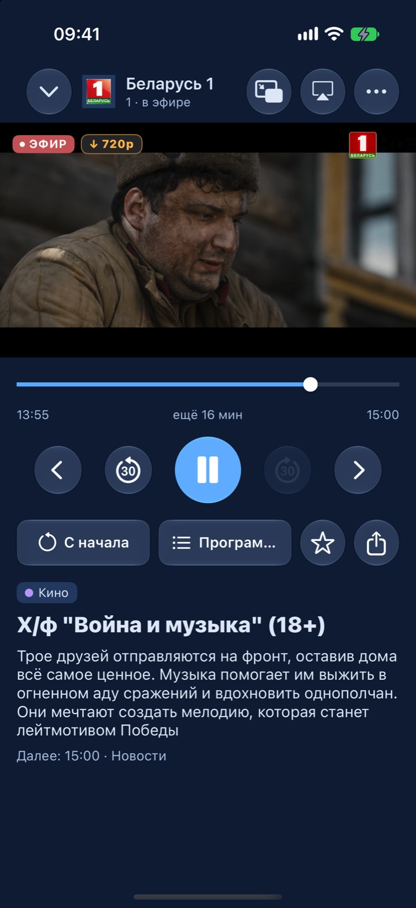
Плеер с описанием передачи
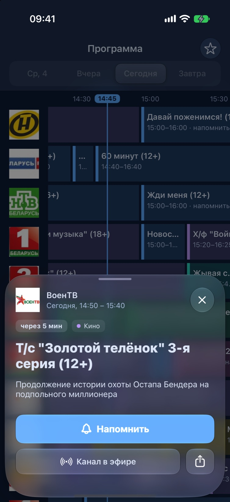
Панель передачи: напомнить, поделиться
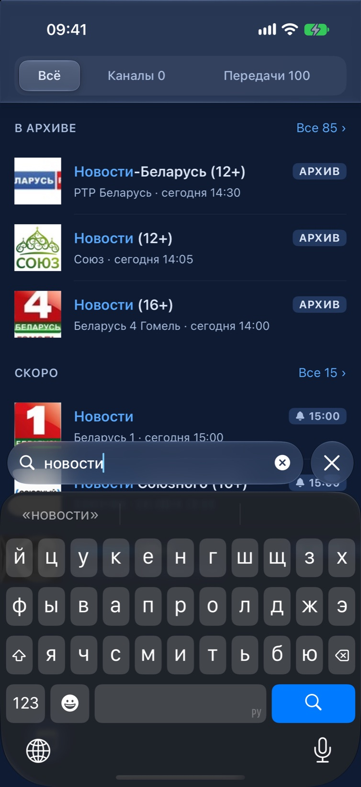
Поиск по каналам и программе
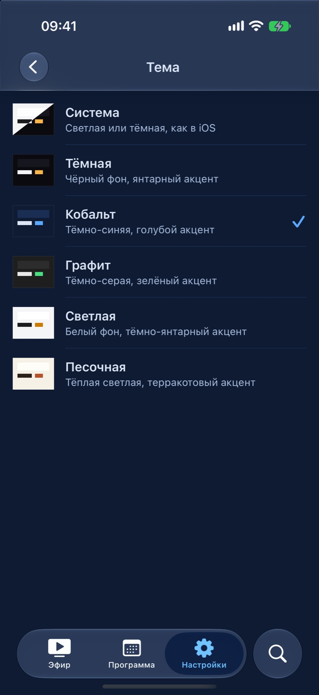
Шесть тем на выбор
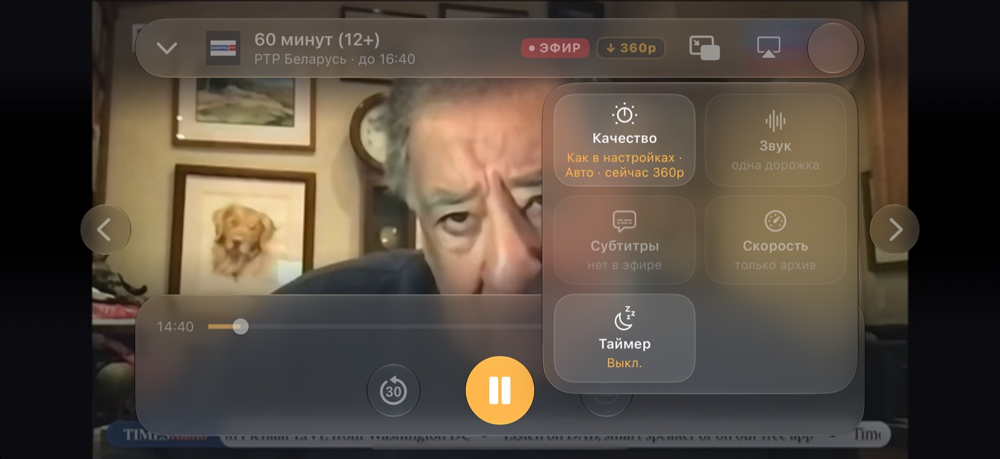
Во весь экран — со стеклянными панелями
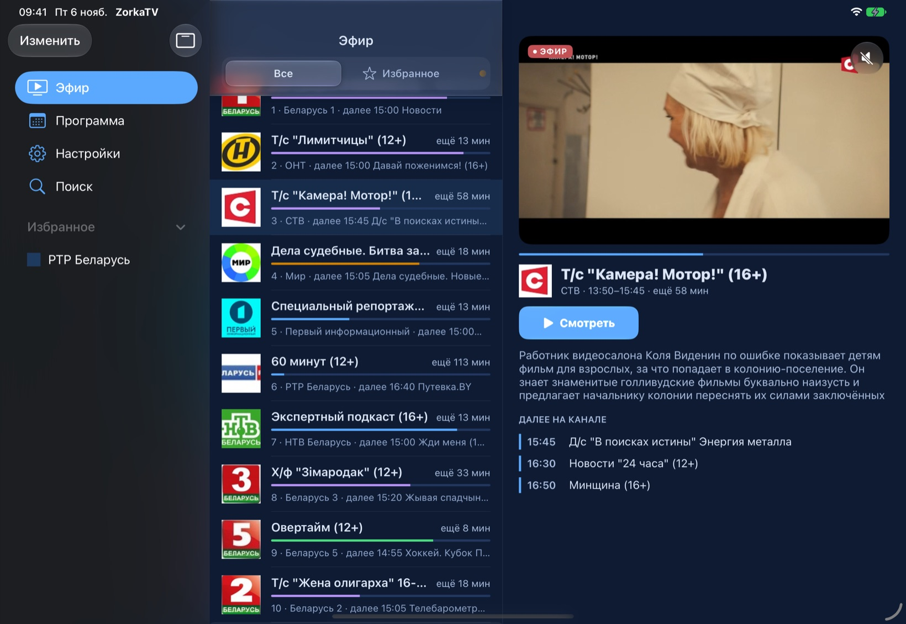
iPad: список и большое превью рядом
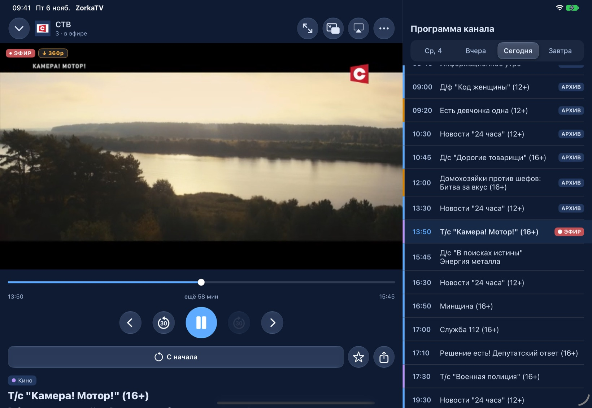
iPad: плеер и программа канала
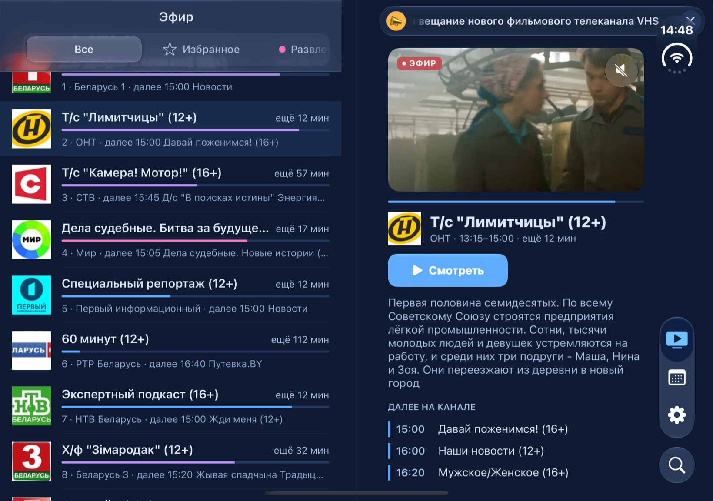
iPhone Duo раскрыт: колонки сходятся у сгиба
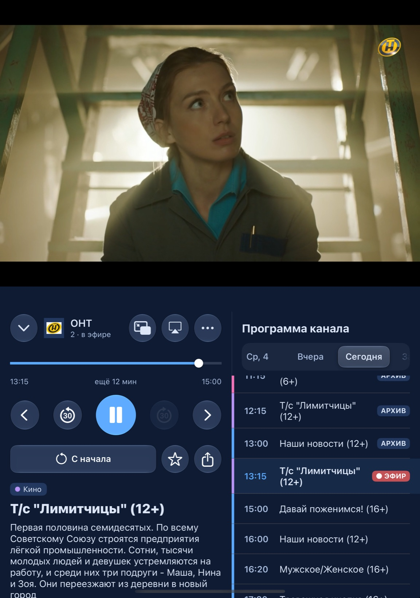
Полусложен: видео сверху, кнопки снизу
Возможности
Что умеет ZorkaTV
Всё, чтобы смотреть телевизор с удовольствием — дома и в дороге.
Эфир
Превью канала прямо над списком, без звука. Открывается тот канал, что смотрели в прошлый раз.
Категории, избранное, свой порядок и скрытые каналы.
У каждой передачи — полоска цвета её жанра и «ещё 25 мин».
Пауза в эфире: продолжите с того же места, а «В эфир» вернёт к прямой трансляции.
Программа
Сетка передач всех каналов — от начала архива до завтра.
Панель передачи: описание, жанр, возраст и что будет дальше.
Напоминания за 5 минут до начала: нажали на уведомление — и вы на канале.
Архив
Пропустили передачу — смотрите её в записи. Идущую можно начать с начала.
Продолжение с того места, где остановились: «Продолжаем с 34:10 · С начала».
Недосмотренное ждёт в строке «Продолжить просмотр».
Следующая передача включается сама; скорость записи — от 0,75× до 2×.
Плеер
«Картинка в картинке» и AirPlay — всегда под рукой.
Качество: авто, высокое или экономия; выбор для канала запоминается, а метка «1080p» показывает, что идёт на самом деле.
Звуковые дорожки и субтитры — там, где канал их даёт.
Таймер сна от 15 минут до 2 часов, с предупреждением за минуту.
Перерыв в вещании: видно, до какого времени, и можно смотреть из архива.
Поиск
Каналы и передачи вместе: «Сейчас в эфире», «В архиве», «Скоро».
Наберите номер, например «53», — нужный канал окажется первым.
«Что идёт сейчас» по жанрам и недавние запросы.
iPad, iPhone Duo и Mac
На широком экране — две колонки: список рядом с большим превью, плеер рядом с программой канала.
iPhone Duo: колонки сходятся у сгиба, а в полусложенном виде видео сверху, кнопки снизу.
Клавиатура и мышь: пробел — пауза, стрелки — перемотка и каналы, цифры — номер канала, ⌘F — поиск.
Окно любого размера, Split View, Stage Manager — раскладка меняется на лету, видео не прерывается.
Под себя
Шесть тем: Системная, Тёмная, Кобальт, Графит, Светлая, Песочная.
Размер шрифта: системный, мелкий, средний или крупный.
Восемь жанров со своими цветами — любой можно поменять.
Русский, беларуская, English — язык меняется сразу, без перезапуска.
Резервная копия настроек в файл или iCloud — когда вы сами захотите.
Ссылки и Handoff
Поделитесь передачей короткой ссылкой — она откроет её прямо в ZorkaTV.
Handoff: начали смотреть на iPhone — продолжите на iPad или Mac с того же места.
Объявления оператора
Важное от оператора проезжает один раз бегущей строкой вверху «Эфира».
Не нужно — выключите в настройках.
Устройства
Где работает
Одно приложение — для телефона, планшета и компьютера.
iPhone
iOS 17 и новее
iPad
iPadOS 17 и новее
iPhone Duo
Своя раскладка в раскрытом и полусложенном виде
Mac
Mac с чипом Apple — как приложение для iPad
Нужна своя подписка ZALA
Войдите с логином и паролем от вашей подписки — и смотрите каналы, которые в неё входят. ZorkaTV не продаёт подписку и не показывает каналы без неё.
Приватность
Ваше остаётся вашим
У ZorkaTV нет своего сервера: каналы и программа приходят прямо от оператора.
Никакой слежки
Нет рекламы и слежки между приложениями и сайтами. ZorkaTV не знает, кто вы.
Логин остаётся на устройстве
Логин и пароль хранятся в связке ключей только этого устройства и уходят только оператору при входе. В iCloud и в резервную копию они не попадают.
Отчёты о сбоях без личных данных
Если что-то сломается, приложение отправит отчёт через Sentry — без логина, пароля, ключей входа и снимков экрана, не связанный с вами. Иногда туда же уходит, за сколько секунд открылся канал.
iCloud — только по кнопке
Настройки попадают в ваш iCloud, только когда вы сами нажмёте «Сохранить в iCloud».